Note: first read the place opt and then continue with Pre CTS.
Set the Optimization Directives
don’t_use, size_only
Perform High Fanout Nets Synthesize (HFNS)
High Fanout Nets are Synthesized before Clock Tree Synthesis
HFNS is the Buffering of High Fanout Nets
Usually High Fanout Nets may have Fanout of more than 1000
Eg., Reset, Clear etc.
Set CTS Routing Rules
Shielding
Non Default Rules (NDR)
Set RC Delay Models
Non-Default Rule (NDR)
The user-defined Routing rules apart from the default Routing Rule
Often used to “harden” the sensitive nets like Clock Nets
NDRs make the Clock Routes less sensitive to CrossTalk or EM effects
Double/ Triple Width for avoiding Electromigration
Double/ Triple Spacing for avoiding Crosstalk
NDRs will improve Insertion Delay
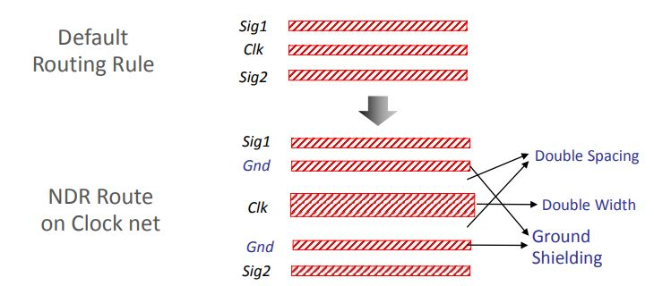
Clock Tree Synthesis (CTS)
Clock Tree Synthesis (CTS) is one of the most important stages in PnR. CTS QoR decides timing convergence &
power. In most of the ICs clock consumes 30-40 % of total power. So efficient clock architecture, clock gating &
clock tree implementation helps to reduce power.
The process of distributing the clock and balancing the load is called CTS. Basically, delivering the clock to all
sequential elements. CTS is the process of insertion of buffers or inverters along the clock paths of ASIC design
in order to achieve zero/minimum skew or balanced skew. Before CTS, all clock pins are driven by a single
clock source. CTS starting point is clock source and CTS ending point is clock pins of sequential cells.
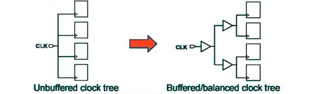
Difference between High Fanout Net Synthesis (HFNS) & clock tree Synthesis.
Buffers and clock inverter with equal rise and fall times are used. whereas HFNS uses buffers and inverters with a relaxed rise and fall times.
HFNS are used mostly for reset, scan enable and other static signals having fanouts. there is not stringent requirement of balancing and power reduction.
Clock tree power is given special attention as it is a constantly switching signal. HFNS are mostly performed for static signals and hence not much attention to power is needed.
NDR rules are used for clock tree routing
Difference between clock buffer and normal buffer
Clock buffer have equal rise time and fall time, therefore pulse width violation is avoided. In clock buffer Beta ratio is adjusted such that rise and fall time are matched. this may increase size of clock buffer compared to normal buffer.
Normal buffer may not have equal rise and fall time. Clock buffers are usually designed such that an input signal with 50% duty cycle produces an output with 50% duty cycle.
Inputs of CTS
Technology file (.tf)
Netlist
SDC
Library files (.lib & .lef) & TLU+ file
Placement DEF file
Clock specification file which contains Insertion delay, skew, clock transition, clock cells, NDR, CTS tree type, CTS exceptions, list of buffers/inverters etc...
Goals of CTS
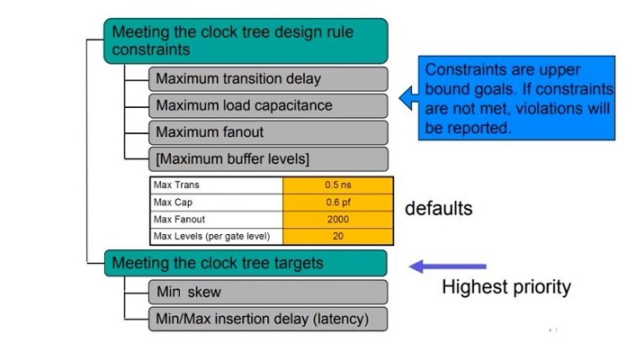
Sanity Checks need to be done before CTS
Check legality
Check power stripes, standard cell rails & also verify PG Connections.
Timing QOR (Setup should be under control)
Timing DRVs
High Fanout nets (like scan enable/any static signal)
Congestion (running CTS on congestion design / design with congestion hotspot can create more congestion and other issues (Noise/IR) )
Remove Don't_use attribute on clock buffers and inverters
Check whether all pre-existing cells in clock path are balanced cells (CK* Cells)
Check & qualify don't_touch, don't_size attributes on clock components.
Clock Latency / Insertion Delay
Clock Latency
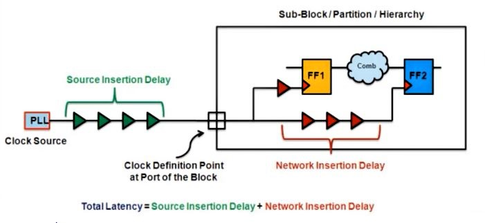
Total time taken by the clock signal to reach the input of the register
Source latency is the time between clock sources to clock definition ports
Network latency is the time between clock definition ports to clock leaf cells in the design
Insertion Delay (ID)
ID is the clock latency, but after Clock Tree is synthesized
ID is the physical delay and Clock Latency is the virtual delay
Latency is a target given to the tool through SDC file or clock tree attribute file and Insertion Delay is the achieved delay value after CTS
Source and Network Latency (Original Clock & Generated Clock)
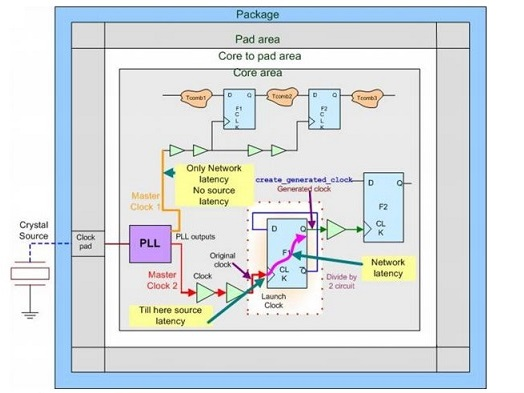
The Clock Problem
Clock skew
Long clock insertion delay
Skew across clocks
Heavy clock net loading
Clock is power hungry
Clock to signal coupling effect (CrossTalk)
Electromigration on clock net
Clock Tree is a path from the Clock Source (Root) to Clock Sinks
(Leaf)
Clock Tree Synthesis is the process of creating this Clock Path
from Clock Source to Clock Sinks
All Clock pins of flip Flop are considered as Clock Sinks (Leaf);
where the Clock Tree Synthesis ends
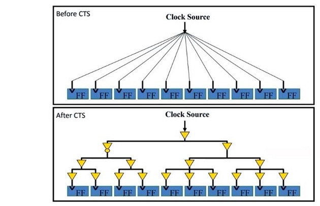
Main concerns for Clock Design
Skew
Most important concern for clock networks
For increased clock frequency, skew may contribute over 10% of the system cycle time
Due to variations in trace length, metal width and height, coupling caps
It can also be due to variations in local clock load, local power supply, local gate length and threshold, local temperature
Power
Very important, as clock is a major power consumer
It switches at every clock cycle
Noise
Clock is often a very strong aggressor
May need shielding
Delay
Not really important
But Slew Rate is important (sharp transition)
Clock Uncertainty
Clock Uncertainty is the time difference between the arrivals of clock
signals at registers in one clock domain or between domains
Uncertainties include Clock Skew, Clock Jitter and Clock Margin
Clock Skew: Spatial Clock Variation
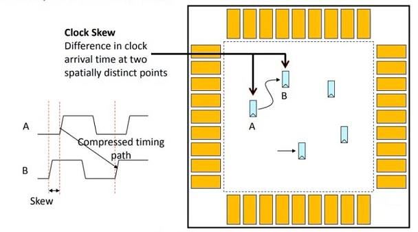
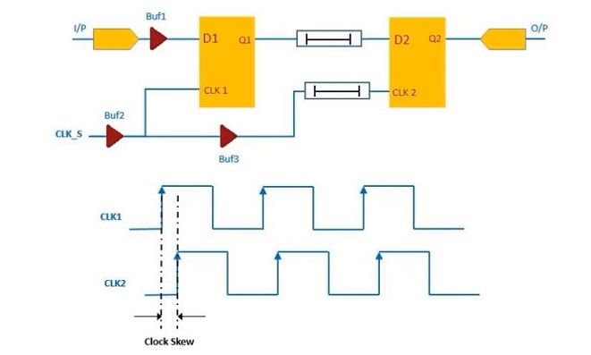
Positive Skew
If capture clock comes late than launch clock then it is called positive clock.
Negative Skew
If capture clock comes Early than launch clock then it is called positive clock.
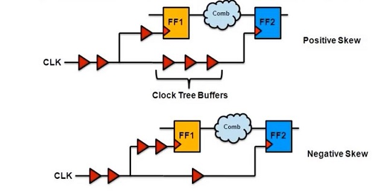
Local Skew
It is the difference in arrival of clock at two consecutive pins of a sequential element.
Global Skew
It is defined as the difference between max insertion delay and min insertion delay of any flops.
it is also defined as the difference between shortest clock path delay and longest clock path delay reaching two sequential elements.
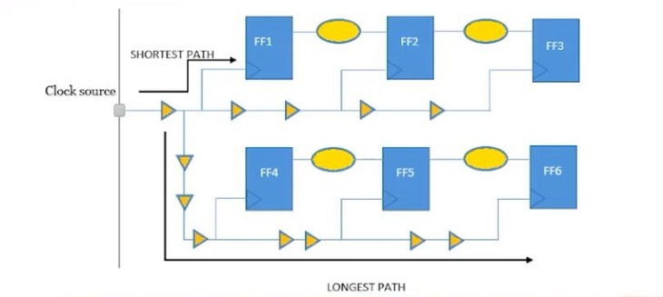
Boundary Skew
It is defined as the difference between max insertion delay and the min insertion delay of boundary flops.
Useful Skew
If clock is skewed intentionally to resolve violations. it is called useful skew.
Clock Jitter: Temporal Clock Variation
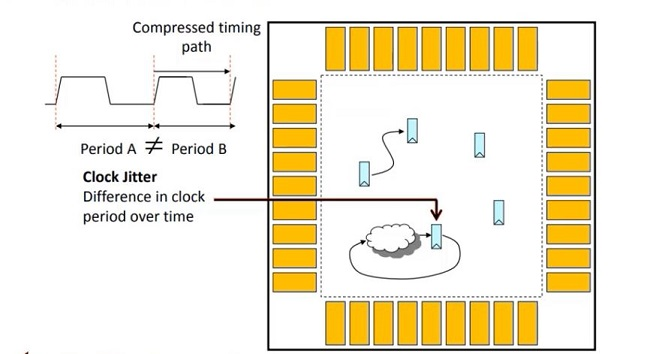
Jitter is the short-term variations of a signal with respect to its ideal position in time
The two major components of Jitter are random Jitter and deterministic Jitter
Factors causing Jitter includes imperfections in Clock oscillator, supply voltage variations, Temperature variations, Crosstalk
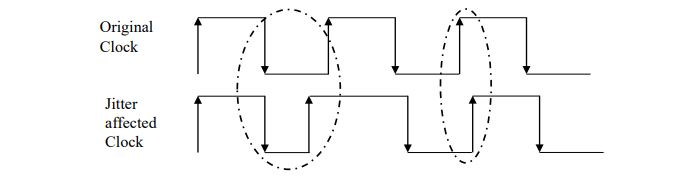
CTS Pre-requisites
Legally Placed and Optimized with acceptable Congestion
Timing should be good
No Design Rule Violations
Power/Ground nets are pre-routed
HFNS done
Logical/Physical Library should have special Clock Cells
CTS Objects
The timer starts from every Clock Source and traces forward over Combinational Arcs until it reaches the Clock Pin of a flop or another Clock Source
All Pins/ Timing Arcs in the forward trace before a valid Leaf are considered to be in the clock network
Pin or Combinational Timing Arcs that trace to a non-clock pin are not part of Clock Tree network (e.g. D pin of FF)
Sequential elements are traced through if it is a source of the Generated Clock
Clock tracing after the propagation of Case Analysis
Clock tracing should be Mode aware
Inverters are added in Clock Tree for better Duty Cycle
Limit the buffer/inverter list to just 3 or 4 buf/inv sizes
CTS Flow
Check and fix Macro locations
Read CTS SDC: Clock Tree begins at SDC defined clock pin and ends at stop pin of the flop
Generate CTS Specification file
Max. Skew
Max. and Min. Insertion Delay
Max. Transition, Capacitance, Fanout
No. Buffer levels (Tree depth)
Buffer/ Inverter list
Clock Tree Routing Metal Layers
Clock Tree Leaf Pin, Root Pin, Preserve Pin, Through Pin and Exclude Pin
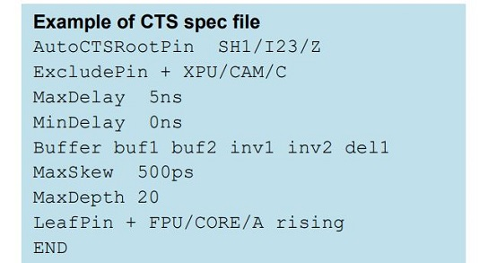
Compile CTS using CTS Spec. file
Place Clock Tree Cells
Route Clock Tree (Optional and can be done during Signal net routing also)
Clock Tree Reference
By default, each clock tree references list contains all the clock buffers and clock inverters in the logic library.
The clock tree reference list is,
Clock tree synthesis
Boundary cell insertions
Sizing
Delay insertion
Boundary cell insertions:
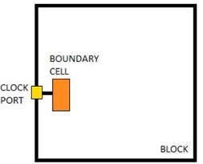
When you are working on a block-level design, you might want to preserve the boundary conditions of the block’s clock ports (the boundary clock pins).
A boundary cell is a fixed buffer that is inserted immediately after the boundary clock pins to preserve the boundary conditions of the clock pin.
When boundary cell insertion is enabled, buffer is inserted from the clock tree reference list immediately after the boundary clock pins. For multi-voltage designs, buffers are inserted at the boundary in the default voltage area.
The boundary cells are fixed for clock tree synthesis after insertion; it can’t be moved or sized. In addition, no cells are inserted between a clock pin and its boundary cell.
Delay insertion:
If the delay is more, instead of adding many buffers we can just add a delay cell of particular delay value.
Advantage is the size and also power reduction. But it has high variation, so usage of delay cells in clock tree is not recommended.
Clock Tree Exceptions:
Non-Stop pin
Exclude pin
Float pin
Stop pin
Don't touch sub-tree
Don't buffer net
Don't size net
Non-stop pin
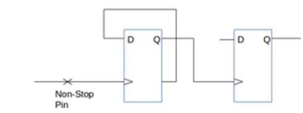
Non-stop pins trace through the endpoints that are normally considered as endpoints of the clock tree.
Example:
The clock pin of sequential cells driving generated clock are implicit non-stop pins.
Clock pin of ICG cells
Exclude pin:
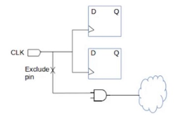
Exclude pin are clock tree endpoints that are excluded from clock tree timing calculation and optimization.
The tool considers exclude pins only in calculation and optimizations for design rule constraints. During CTS,
the tool isolates exclude pins from the clock tree by inserting a guide buffer before the pin or these pins are
need not to be considered during the clock tree propagation.
Example - Non clock input pin of sequential cell
muktiplexer select pin
three state enable pin
output port
incorrectly defined clock pin (if pin dont have trigger edge info)
cascaded clock
In the above figure, beyond the exclude pin the tool never perform skew or insertion delay optimization but
does perform design rule fixing.
Float pin:
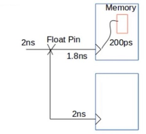
Float pins are clock pins that have special inserƟon delay requirements and balancing is done according to the
delay [Macro modeling]. This is same as sync pin but internal clock latency of the pin is taken into
consideration while building the clock tree. To adjust the clock arrival for specific endpoints with respect to all
other endpoints.
Example - Clock entry pin of hard macros
Stop pin:
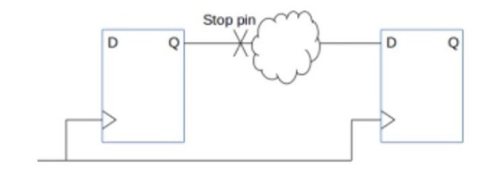
Stop pins are the endpoints of clock tree that are used for delay balancing. In CTS, the tool uses stop pins in
calculation & optimization for both DRC and clock tree timing.
Example - Clock sink are implicit stop pins
The optimization is done only upto the stop pin as shown in the above fig. The clock signal should not
propagate after reaching the stop/sync. This pin needs to be considered for building the clock tree.
Don't Touch Sub-tree:
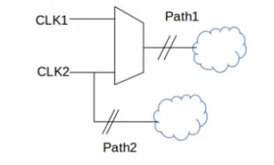
If we want to preserve a portion of an existing clock tree, we put don’t touch exception on the sub-tree.
CLK1 is the pre-existing clock and path 1 is optimized with respect to CLK1.
CLK2 is the new generated clock. Don’t touch sub-tree attribute is set w.r.t C1.
Example:
If path1 is 300ps and path2 is 200ps, during balancing delay are added in path2.
If path1 is 200ps and path2 is 300ps, during balancing delay can’t be added on path1 because on path1 don’t touch attribute is set and we get violation.
Don't Buffer Net:
It is used in order to improve the results, by preventing the tool from buffering certain nets. Don’t buffer nets have high priority than DRC. CTS do not add buffers on such nets.
Example - If the path is a false path, then no need of balancing the path. So set don’t buffer net attribute.
Don't Size Cell:
To prevent sizing of cells on the clock path during CTS and optimization, we must idenƟfy the cell as don’t size cells.
Specifying Size-Only Cells:
During CTS & optimization, size only cells can only be sized not moved or split. After sizing, if the cells overlap
with an adjacent cell after sizing, the size-only cell might be moved during the legalization step.
CTS Algorithms
RC Tree Based CTS
H Tree based Algorithm
X Tree based Algorithm
Method of Mean and Median (MMM)
Geometric Matching Algorithm (GMA)
Pi Configuration
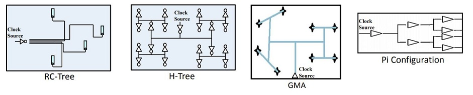
Before CTS all Clock Pins are driven by a single Clock Source
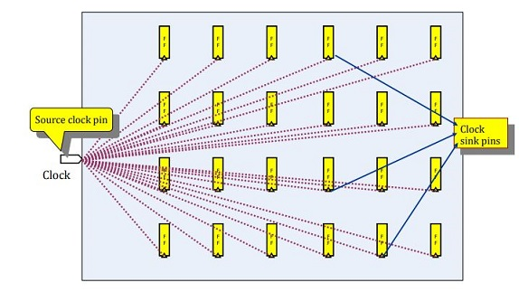
After CTS the buffer tree is built to balance the loads and minimize the skew
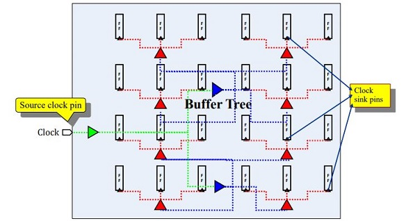
After CTS a “delay line” is added to meet the minimum Insertion Delay (ID)
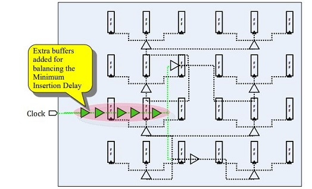
Analyze the Clock Tree
Report Timing (both Setup and Hold)
If timing not met then check clocks be grouped (balanced together)
Report Insertion Delay & Skew and verify that the targets are achieved
Report DRV targets (Fanout, Capacitance and Transition)
Check the intended Leaf Cell (Clock Sinks) is reached
Check the Clock Tree Exceptions are not in the Clock Tree
Report the pre-existing cells, such as Clock Gating Cells
Do Quality-of-Report (QoR)
Check Clock Tree converges either with itself or with another Clock Tree
Clock Tree has timing relationship with other Clock Trees for inter Clock Skew balancing
Check Design Rule Constraints
Check Routing Constraints
Report Power and Area
Post CTS Optimization
Optimization with Useful Skew
Optimization with Total Negative Slack (TNS)
Fine Grid Spacing
Post CTS Optimization Techniques
Shielding
Sizing
Buffer re-location
Level adjustment
Optimize the design for Hold Time
Hold Violations should be fixed first in Best Corner and then in Worst Corner